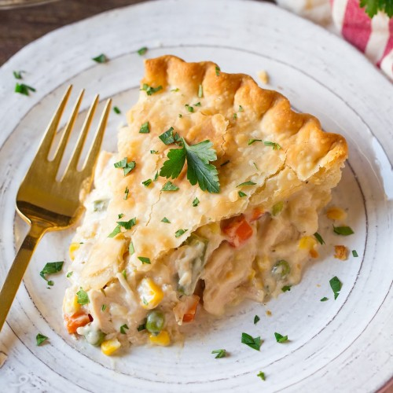

Chicken Pot Pie

An easy to follow recipe for a tasty, 9-inch chicken pot pie.
The best classic homemade chicken pot pie with a flaky crust and creamy chicken pot pie filling.
Ingredients
- 4 tablespoons unstalted butter
- 1 lb. boneless skinnless chicken breast
- 1 cup sliced carrots
- 1/2 cup sliced celery
- 1/2 cup chopped yellow onion
- 1 1/4 teaspoons salt
- 1/2 teaspoon garlic powder
- 1/2 teaspoon dried thyme leaves
- 1/4 teaspoon ground black pepper
- 1/4 cup all purpose flour
- 1/2 cup heavy cream
- 1 cup chicken broth
- 1/2 cup frozen peas
- 2 tablespoons minced fresh flat-leaf parsley
- 2 (1 top and 1 bottom) unbaked pie crusts
Instructions
- Make sure there is an oven rack on the bottom rack of the oven. Preheat oven to 425 degrees F.
- Add the butter to a large skillet over medium heat. Once the butter is melted, add the
chicken, carrots, celery, onion, salt, garlic powder, thyme leaves, and pepper. Cook for 8-10
minutes, until the chicken is cooked through, stirring often.
- Add the flour. Stir well, until no dry flour remains. Slowly stir in the cream, then the chicken
broth. Cook until bubbling and thick, stirring often, 3-4 minutes.
- Remove from the heat. Stir in the peas and flat leaf parsley. Let this cool for 15-30 minutes
before filling the pie*.
- Fit one pie crust into a 9-inch pie plate. Spoon the cooled filling into the pie crust. Top with
the second pie crust. Seal the edges of the pie crust together. Cut 3-4 slits in the top crust to
allow steam to escape.
- Place the filled pie plate on a baking sheet. Bake for 30 minutes on the bottom rack of the
oven.
- Cool for 15-30 minutes before slicing and serving.**
*Pouring hot filling into the unbaked pie crust will make the crust soggy. You could make the filling
up to 3 days ahead of time and store it in a sealed container in the refrigerator.
**The longer the pot pie can cool before slicing, the thicker/less runny the filling will be.